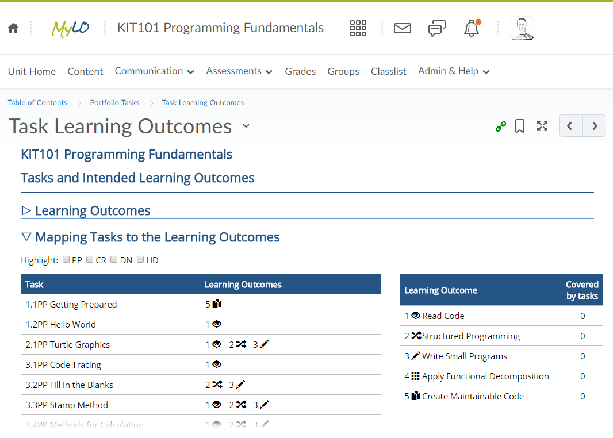

KIT101 Programming Fundamentals
PP Task 12.1 Learning Reflection Report
Overview
Purpose: |
Application for a passing grade in the unit, with justifications against the assessment criteria in preparation for portfolio submission. |
Task: |
Complete the learning reflection report. |
Learning Outcomes: |
1, 2, 3, 4, 5 |
Time: |
This task must be completed before the start of week 13 to ensure you can get feedback! |
Resources: |
- MyLO: Portfolio Tasks > Task Learning Outcomes
|
Submission Details
Upload the following to the MyLO submission folder for this task:
- A PDF document with your description
Assessment Criteria
A Completed submission will:
- Clearly demonstrate how you have met the unit’s learning outcomes, with reference to the tasks you have completed during the semester
- Be your own work and expresses your ideas in your own words. Where ideas and descriptions are related to other people they are appropriately cited and referenced (you are not required to refer to any external sources though)
Note: Your submission will be marked as Completed when it is of the minimally acceptable standard, not when it reaches a high standard. This means you can, and probably should, further improve it based on the feedback you receive before submitting the version to be assessed as part of your final grade.
Instructions
The Learning Reflection Report is your opportunity to outline how the work you have completed demonstrates that you have met all of the unit’s learning outcomes. In this document you will indicate the grade you are applying for, and provide reasons why you should be awarded this grade based on the unit’s assessment criteria.
Download the template for the Learning Reflection Report and prepare a first draft. Try to include some of the following aspects:
Use the Task Learning Outcomes document under Portfolio Tasks in MyLO to assess how the tasks you have completed relate to the unit learning outcomes. Make sure that you have a range of evidence for each of the unit learning outcomes.
- In the report, indicate the grade you think you will be able to achieve.
- Read over the checklist, and make sure you will have the required work to achieve this grade.
Write something up for the reflections section of the Learning Reflection Report, or list some dot points you can expand later.
Submit the draft for feedback, and this will be discussed in the tutorial class in week 13.
Tip: The Learning Reflection Report has a large impact on your final result. This is the document where you make a case that you should be awarded a certain grade. The more clearly you can demonstrate good quality work in this document the better grade you are likely to receive. Aim to be clear and concise, and refer to the work you have included to demonstrate your understanding.
Note: Week 12 is the last week to submit things for feedback. Make sure you finish off any tasks you have outstanding—get them signed off during consultation—and make sure you get this weeks material done on time!
Note: In this summary of your semester’s work just refer to the other pieces included in your portfolio (that is, submitted to MyLO) rather than re-writing them here. Think of the Learning Reflection Report like an index referring the reader to other pieces of work—your programs, code traces, reports, diagrams, and so on—that demonstrate your achievements.